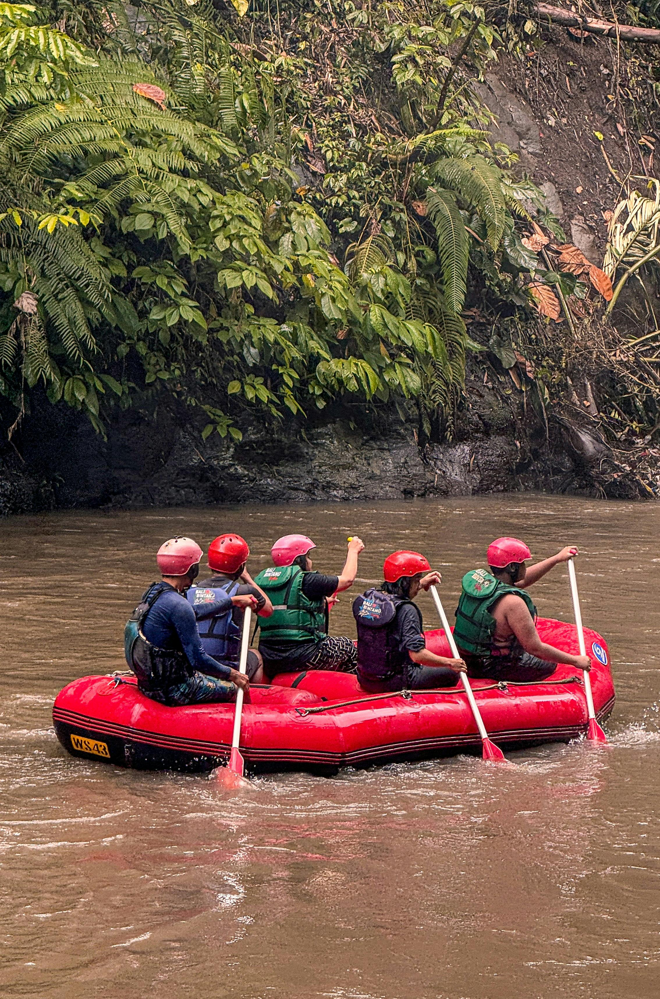
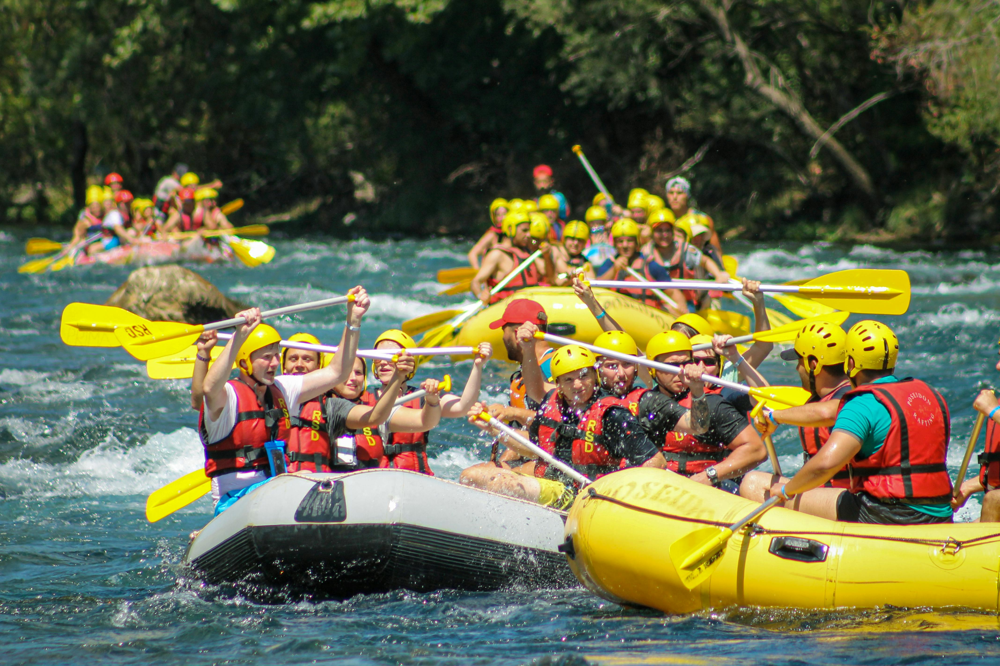
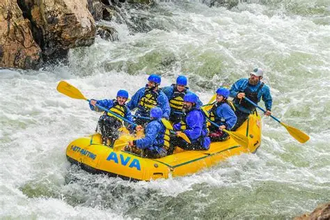

Perfect for beginners and families, this trip takes you through gentle Class II–III rapids.

Designed for adventure seekers, this trip covers a longer stretch of river with a mix of calm waters and challenging Class III–IV rapids. You’ll stop for a riverside picnic lunch, explore hidden coves, and bond with your group as you navigate waves and drops. It’s a full‑day immersion in nature and adrenaline.

For experienced rafters craving intensity, this trip tackles Class IV–V rapids with steep drops, powerful currents, and technical maneuvers. Guided by expert instructors, you’ll push your limits and feel the rush of conquering some of the river’s most demanding sections. Safety gear and thorough briefings ensure you’re prepared for the ultimate challenge.

| Hours | Week Days | ||
|---|---|---|---|
| Tuesday | Thursday | Saturday | |
| 1 to 2pm | Beginners | Expedition | Extreme Challenge |
| 3 to 4pm | Expedition | Extreme | Beginners |